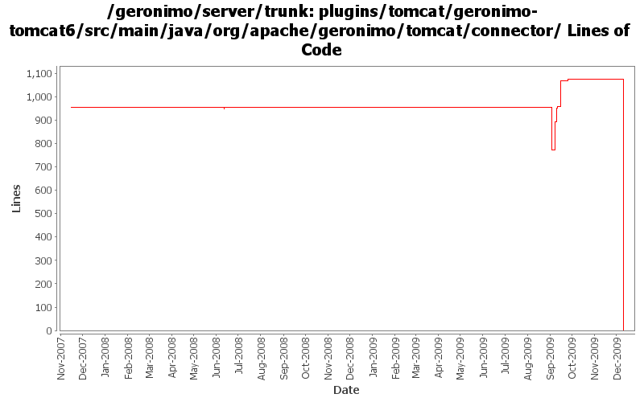

[root]/plugins/tomcat/geronimo-tomcat6/src/main/java/org/apache/geronimo/tomcat/connector

| Author | Changes | Lines of Code | Lines per Change |
|---|---|---|---|
| Totals | 69 (100.0%) | 1406 (100.0%) | 20.3 |
| genspring | 40 (58.0%) | 1031 (73.3%) | 25.7 |
| linsun | 8 (11.6%) | 344 (24.5%) | 43.0 |
| xuhaihong | 13 (18.8%) | 18 (1.3%) | 1.3 |
| rickmcguire | 1 (1.4%) | 12 (0.9%) | 12.0 |
| djencks | 1 (1.4%) | 1 (0.1%) | 1.0 |
| vamsic007 | 4 (5.8%) | 0 (0.0%) | 0.0 |
| jdillon | 2 (2.9%) | 0 (0.0%) | 0.0 |
GERONIMO-4980 Use Tomcat 7 in Geronimo 3.0
0 lines of code changed in 12 files:
Commit tomcat plugin changes so far
12 lines of code changed in 1 file:
GERONIMO-4876 "java.net.ConnectException" when I shutdown the server
18 lines of code changed in 1 file:
GERONIMO-4879 Unable accessing created connector after changing its port number
1 lines of code changed in 1 file:
GERONIMO-4877 Modification to keystoreFile doesn't work for HTTPS connector
151 lines of code changed in 3 files:
GERONIMO-4851 Server will get into abnormal status when trying to edit/delete Tomcat Connector HTTPS BIO network listener
10 lines of code changed in 1 file:
GERONIMO-4856 Some abnormal conditions with Tomcat NIO HTTPS Connector
60 lines of code changed in 1 file:
GERONIMO-4853 Can't define tomcat connector with GBean.
159 lines of code changed in 10 files:
GERONIMO-4853 Can't define tomcat connector with GBean.
549 lines of code changed in 7 files:
GERONIMO-4742 Connector portlets for Tomcat does not work
1, Added ConnectorWrapperGBeanStarter.java to start connector GBeans for connectors defined in server.xml.
2, Added TomcatServerConfigManager.java to use DOM to read/write connectors from server.xml.
3, Modified other classes to make this happen.
101 lines of code changed in 17 files:
GERONIMO-4258 clean up some naming constant usage
1 lines of code changed in 1 file:
GERONIMO-4114 - newly created APR HTTPS connector failed to start - hopefully i got the svn property right this time!
5 lines of code changed in 2 files:
revert 666775 due to incorrect svn property
339 lines of code changed in 2 files:
GERONIMO-4114 - newly created APR HTTPS connector failed to start
0 lines of code changed in 4 files:
(GERONIMO-3985) Use SLF4J as the primary logging facade for Geronimo
0 lines of code changed in 2 files:
GERONIMO-3603 host attribute of Tomcat Http11ConnectorGBean and AJP13ConnectorGBean is ignored
o Changed the attribute name from "host" to "address"
0 lines of code changed in 4 files: